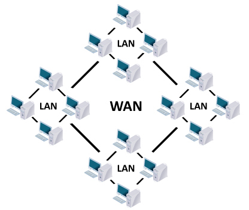

---INTERNET--- |
|
RESUMEN:Internet se podría definir como una red global de redes de ordenadores cuya finalidad es permitir el intercambio libre de información entre todos sus usuarios. Pero sería un error considerar Internet únicamente como una red de computadoras. Podemos considerar las computadoras simplemente como el medio que transporta la información. En este caso Internet sería una gran fuente de información práctica y divertida. Con Internet podemos enviar mensajes, programas ejecutables, ficheros de texto, consultar catálogos de bibliotecas, pedir libros, hacer compras.Hay que tener en cuenta que todos los recursos que se pueden encontrar en Internet existen porque alguna persona de forma voluntaria ha dedicado su tiempo en generarlos.La historia de internet se remonta al desarrollo de las redes de comunicación. La idea de una red de ordenadores creada para permitir la comunicación general entre usuarios de varias computadoras sea tanto desarrollos tecnológicos como la fusión de la infraestructura de la red ya existente y los sistemas de telecomunicaciones. La primera descripción documentada acerca de las interacciones sociales que podrían ser propiciadas a través del networking (trabajo en red) está contenida en una serie de memorandos escritos por J. C. R. Licklider, del Massachusetts Institute of Technology, en agosto de 1962, en los cuales Licklider discute sobre su concepto de Galactic Network (Red Galáctica) Las versiones más antiguas de estas ideas aparecieron a finales de los años cincuenta. Implementaciones prácticas de estos conceptos empezaron a finales de los ochenta y a lo largo de los noventa. En la década de 1980, tecnologías que reconoceríamos como las bases de la moderna Internet, empezaron a expandirse por todo el mundo. En los noventa se introdujo la World Wide Web (WWW), que se hizo común. La infraestructura de Internet se esparció por el mundo, para crear la moderna red mundial de computadoras que hoy conocemos como internet. Atravesó los países occidentales e intentó una penetración en los países en desarrollo, creando un acceso mundial a información y comunicación sin precedentes, pero también una brecha digital en el acceso a esta nueva infraestructura. Internet también alteró la economía del mundo entero, incluyendo las implicaciones económicas de la burbuja de las .com. Un método de conectar computadoras, prevalente sobre los demás, se basaba en el método de la computadora central o unidad principal, que simplemente consistía en permitir a sus terminales conectarse a través de largas líneas alquiladas. Este método se usaba en los años cincuenta por el Proyecto RAND para apoyar a investigadores como Herbert Simon, en Pittsburgh (Pensilvania), cuando colaboraba a través de todo el continente con otros investigadores de Santa Mónica (California) trabajando en demostración automática de teoremas e inteligencia artificial. Servicios que ofrece el Internet:
TIPO DE REDES: Se clasifican con base en funcion de la localizacion de recursos.Segun el primer criterio,hay redes que tienen sus recursos en modo compartido.El usuario que accede a esa red necesita conocer la ubicación exacta del documento.También pueden tener sus recursos en modo distribuido, y en este caso el usuario no necesita conocer la ubicacion exacta. En función de su tamaño,por tanto,de su distribucion geografica. | |
|  | |
Menu |